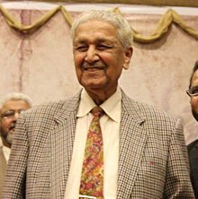

Dr. Abdul Qadir Khan
Father of Pakistan's atomic weapons program

Dr. Abdul Qadeer Khan - A Pakistani Hero
- Dr. Abdul Qadeer Khan born on April 1, 1936.
- He was a Pakistani Nuclear Physicist and Metallurgical Engineer.
- Known as the Father of Pakistan's atomic weapons program..
- He earned a Bachelor of Science degree in Physics from University of Karachi.
- Khan departed for West Germany to study material science.
- In April 1976, Khan joined the atomic bomb program.
- Khan served as an adviser on science and technology in the Musharraf administration and had become a public figure who enjoyed much support from his country's political conservative sphere.